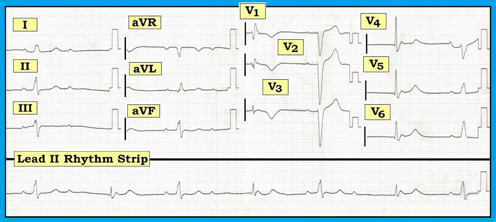
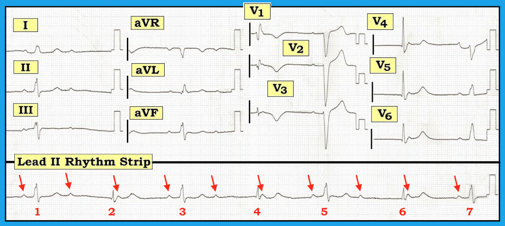
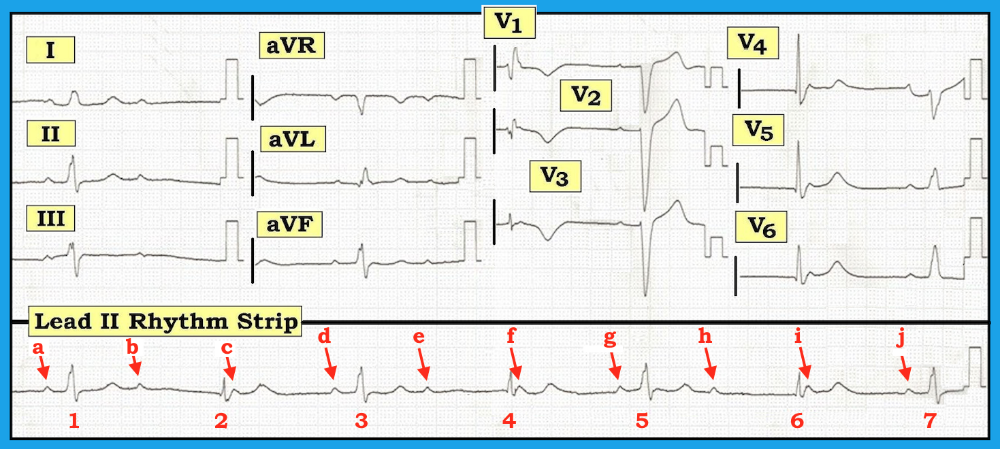
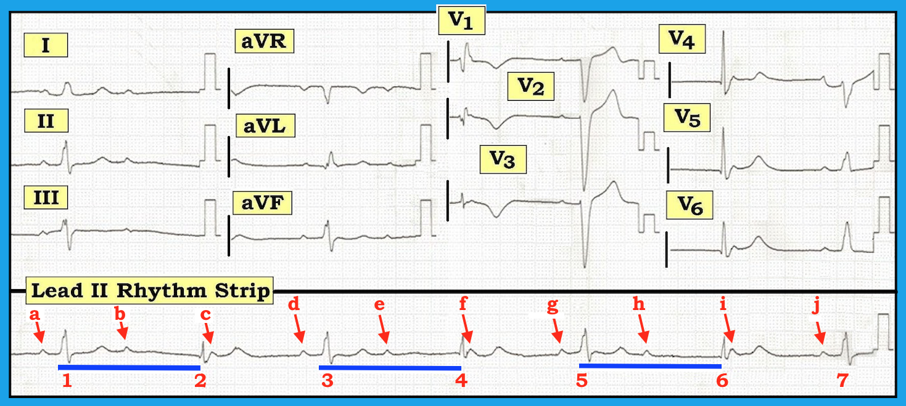

ECG Blog #144 — Blốc nhánh luân phiên?
Điện tâm đồ và dải nhịp chuyển đạo II dài trong Hình 1 được ghi ở một người đàn ông 58 tuổi nhập viện với bệnh sử đau ngực và “mệt mỏi”.
- Bạn đọc bản ghi này như thế nào?
- Có blốc AV 3:1 và/hoặc blốc AV “mức độ cao” không?
- Bạn nhận ra được bao nhiêu loại rối loạn dẫn truyền khác nhau?
- Trên điện tâm đồ có bằng chứng nào về nguyên nhân không?
- Nhiều khả năng sẽ cần điều trị gì?


----------------------------------------------------------
Diễn giải: Đây là một bản ghi phức tạp. Cách dễ nhất mà tôi tìm được
để suy ra cơ chế của những rối loạn nhịp phức tạp như ca này — bắt đầu bằng
một bước đơn giản: đánh số các nhát bóp và đánh dấu các sóng P (Hình 2).
- LƯU Ý: Giá trị của việc dùng compa đo (calipers) để hỗ trợ đọc các rối loạn nhịp phức tạp là không thể nhấn mạnh quá mức. Dùng compa đo giúp bạn nhanh chóng xác định nhịp sóng P và nhịp QRS có đều hay không, và các nhát bóp có (hay không) nhiều khả năng đang được dẫn truyền. Chỉ cần thực hành chút ít — bạn sẽ thấy compa đo tăng đáng kể tốc độ đọc, đồng thời cải thiện độ chính xác. Bác sĩ tim mạch nào không thường xuyên dùng compa đo để đọc các rối loạn nhịp phức tạp sẽ bỏ sót chẩn đoán hơn một lần …
-----------------------------------------------------------
Các mũi tên ĐỎ trong Hình 2 dưới đây chỉ tất cả các sóng P trên dải nhịp chuyển đạo II dài ở cuối Hình 1. Giờ đây bạn có thể rút ra kết luận gì về nhịp này?


-----------------------------------------------------------
Diễn giải Hình 2: Các mũi tên đỏ cho thấy sóng P xuất hiện đều đặn với hình dạng giống nhau. Như vậy, có nhịp xoang nền.
- Lý do khoảng P-P hơi thay đổi là có loạn nhịp xoang. (LƯU Ý: Một dạng loạn nhịp xoang đặc biệt, gọi là “loạn nhịp xoang theo pha thất (ventriculophasic sinus arrhythmia)” — thường gặp đi kèm blốc AV độ 2 hoặc độ 3, và có lẽ đây chính là điều chúng ta đang thấy ở đây).
- Một số nhát bóp trong Hình 2 đang được dẫn truyền! Lưu ý rằng khoảng PR đứng trước các nhát #1, 3, 5 và 7 không đổi (dù hơi kéo dài quá 0.20 giây). Điều này có nghĩa là các nhát #1, 3, 5 và 7 trong Hình 2 đều đang được dẫn truyền (dù kèm blốc AV độ 1).
- Tuy vậy — các sóng P xoang khác thì không được dẫn truyền! Chúng ta biết một số sóng P khác không được dẫn truyền — vì không có phức bộ QRS nào ở gần nhiều sóng P đúng lúc nhưng không dẫn truyền này.
- Vì tần số nhĩ (khoảng P-P) đều (hoặc ít nhất là khá đều) — và vì một số sóng P dẫn truyền còn số khác thì không — điều này có nghĩa là đang có một loại nào đó của blốc AV độ 2. Đây không thể là blốc AV hoàn toàn (độ 3) — vì có một phần dẫn truyền!
CÂU HỎI: Bạn có thể nghĩ trước xem loại nào của blốc AV độ 2 đang hiện diện trong Hình 2 không? Đây là Mobitz I? — hay Mobitz II? — hay blốc AV mức độ cao? — hay một dạng blốc AV độ 2 không xác định được nào đó?
-----------------------------------------------------------
BƯỚC TIẾP THEO: Bạn có xác định được những sóng P được đánh chữ nào trong Hình 3 có cơ hội dẫn truyền, nhưng vẫn không dẫn truyền được không?
- Để làm rõ sóng P nào đang (hay không) dẫn truyền, chúng tôi đã dựng Hình 3 — trong đó mỗi sóng P trên dải nhịp chuyển đạo II dài được đánh dấu bằng chữ cái.


---------------------------------
Diễn giải Hình 3: Như đã nêu — các sóng P được đánh dấu a, d, g và j đều đang dẫn truyền (vì khoảng PR đứng trước các nhát #1, 3, 5 và 7 không đổi).
- Lẽ ra các sóng P được đánh dấu b, e và h phải có thể dẫn truyền — vì các sóng P này đều nằm gần giữa khoảng R-R, vào thời điểm không còn phần nào của hệ thống dẫn truyền đang trong thời kỳ trơ. Việc các sóng P đúng lúc này không dẫn truyền — chính là điều cho chúng ta biết có blốc AV độ 2.
- Còn lại các sóng P được đánh dấu c, f và i. Các sóng P này không dẫn truyền — vì không có phức bộ QRS nào theo sau chúng. Tuy nhiên, các sóng P c, f và i không bao giờ có cơ hội dẫn truyền — vì chúng xuất hiện ngay sau các nhát #2, 4 và 6. Nghĩa là, các sóng P được đánh dấu c, f và i đều rơi vào thời kỳ trơ tuyệt đối ngay sau các phức bộ QRS đứng trước chúng.
- LƯU Ý: Thuật ngữ blốc AV “mức độ cao” có nghĩa là có hơn 1 sóng P đúng lúc liên tiếp có cơ hội dẫn truyền nhưng không dẫn truyền được. Chúng ta không thể chẩn đoán blốc AV “mức độ cao” trong Hình 3 — vì chúng ta không bao giờ thấy 2 sóng P liên tiếp có cơ hội dẫn truyền mà không dẫn truyền được. Hoàn toàn có thể rằng NẾU các nhát # 2, 4 và 6 xuất hiện muộn thêm một chút — thì các sóng P c, f và i sẽ có cơ hội dẫn truyền.
C
ÂU HỎI:
Chúng ta nên gọi các nhát #2, 4 và 6 là gì?
- GỢI Ý: Trong Hình 4, chúng tôi đã vẽ các đường ngang màu XANH để cho thấy khoảng cách từ khởi đầu các nhát #1, 3 và 5 — đến khởi đầu các nhát #2, 4 và 6 là không đổi. Đây chỉ là một trong nhiều mối liên hệ trong bản ghi này có thể nhận ra ngay lập tức nhờ dùng compa đo.


---------------------------------
Diễn giải Hình 4: Các nhát #2, 4 và 6 là các nhát thoát. Khi các sóng P xoang không dẫn truyền được — người ta mong xuất hiện một ổ tạo nhịp “thoát” để ngăn các khoảng ngưng kéo dài. Nhát thoát thường xuất phát nhất từ nút AV — dù chúng cũng có thể xuất phát từ nơi khác trong tâm nhĩ, từ bó His, hoặc từ tâm thất.
- Nhát thoát được nhận ra vì chúng hoặc không có sóng P nào đứng trước — hoặc có sóng P đứng trước nhưng với khoảng PR quá ngắn để có thể dẫn truyền. Vì hầu hết các ổ tạo nhịp “thoát” ít nhất là khá đều — khoảng R-R đứng trước các nhát thoát có xu hướng khá hằng định. Manh mối quan trọng này chính là điều mà các đường ngang màu xanh dài bằng nhau trong Hình 4 cho thấy.
- ĐIỂM THEN CHỐT (PEARL): Trong các bản ghi blốc AV phức tạp, thường khó xác định nhát nào đang (hay không) được dẫn truyền. Biết rằng hầu hết các nhịp thoát ít nhất là khá đều — việc thấy một hay nhiều phức bộ QRS rõ ràng xuất hiện sớm hơn dự kiến là manh mối tuyệt vời cho thấy các nhát sớm đó nhiều khả năng đang được dẫn truyền. Những nhát chậm hơn không có sóng P đứng trước, nhưng có khoảng R-R hằng định đứng trước thường là các nhát thoát (Để ôn lại khái niệm này — Bấm VÀO ĐÂY để tới phút 25:30 trong AV Block Basics Video của chúng tôi).
---------------------------------
Khái niệm về nhịp Thoát–Bắt được (escape-capture): Về mặt mô tả — có vài cách hữu ích để phân loại nhịp chúng ta thấy trong Hình 4.
- Có nhịp theo nhóm (group beating). Nghĩa là, dù nhịp thất trong Hình 4 không đều hoàn toàn — vẫn CÓ một khuôn mẫu. Khuôn mẫu này là các khoảng R-R ngắn và dài luân phiên nhau — với các khoảng ngắn (như giữa các nhát #2-3; 4-5; và 6-7) có độ dài tương tự nhau — và các khoảng dài (như giữa các nhát #1-2; 3-4; và 5-6) cũng có một độ dài tương tự nhau khác.
- Nhịp trong Hình 4 là một nhịp đôi (bigeminal). Đây chỉ là một cách khác để nói rằng khuôn mẫu của nhịp này lặp lại cứ mỗi hai nhát.
- Có Nhịp đôi “Thoát–Bắt được”. Như chúng ta đã bàn ở trên — nhát #2 là một nhát “thoát” — vì nó xuất hiện sau một khoảng ngưng ngắn dài hơn khoảng R-R đứng trước các nhát xoang. Nhát #3 là một nhát “bắt được” — vì sóng P xoang đúng lúc đứng trước nó (tức là sóng P được đánh dấu “d”) xuất hiện vào thời điểm trong khoảng R-R mà hệ thống dẫn truyền đã hồi phục, và có thể dẫn truyền sóng P này xuống tâm thất. Tiếp theo là một nhát thoát khác (nhát #4) — rồi lại một nhát “bắt được” khác (sóng P được đánh dấu “g” có thể dẫn truyền). Chuỗi này sau đó lặp lại.
---------------------------------
TỔNG HỢP: Nhịp trong Hình 4 là một dạng blốc AV độ 2. Có nhịp theo nhóm, với các chuỗi ngắn-dài lặp lại. Nếu chúng ta xem mỗi chuỗi bắt đầu bằng một sóng P dẫn truyền (các nhát #1, 3, 5, 7) — thì sóng P kế tiếp trong mỗi chuỗi không dẫn truyền được (b, e, h). Trước khi ta có thể biết sóng P thứ 3 trong mỗi chuỗi có dẫn truyền được hay không — một nhát thoát đã xuất hiện (các nhát # 2, 4, 6). Nhưng sóng P thứ 3 này trong mỗi chuỗi (tức là các sóng P được đánh dấu c, f và i) không bao giờ có cơ hội dẫn truyền ...
- Chúng ta không thể xác định LIỆU nhịp trong Hình 4 là Mobitz I hay Mobitz II — vì chúng ta không bao giờ thấy 2 sóng P liên tiếp được dẫn truyền. Nghĩa là, chúng ta không thể biết khoảng PR có dài dần ra hay không (như lẽ ra phải thấy trong blốc AV Mobitz I) — vì chúng ta không bao giờ thấy 2 phức bộ QRS được dẫn truyền liên tiếp.
- Chúng ta cũng không thể biết dạng blốc AV độ 2 trong Hình 4 có phải là blốc AV “mức độ cao” hay không — vì chúng ta không bao giờ thấy 2 sóng P liên tiếp lẽ ra phải dẫn truyền nhưng lại không dẫn truyền được.
- Khoảng P-P trong Hình 4 dài ~5 ô lớn. Điều này tương ứng với tần số nhĩ ~60 lần/phút.
- Khoảng R-R của các nhát thoát trong Hình 4 (tức là độ dài của các đường ngang màu xanh) — là ~8 ô lớn. Điều này tương ứng với tần số thoát ngay dưới 40 lần/phút. Như vậy, một vấn đề quan trọng ở đây là nhịp chậm … Hoàn toàn có thể rằng nếu tần số nhĩ hoặc tần số thoát nhanh hơn một chút — thì sẽ có dẫn truyền AV 2:1 (thay vì 3:1).
- Nếu bây giờ chúng ta thay đổi cách nhìn các chuỗi lặp lại trong Hình 4, sao cho thay vì bắt đầu mỗi chuỗi bằng một nhát dẫn truyền từ xoang, chúng ta bắt đầu bằng một nhát thoát (tức là bằng các nhát #2, 4, 6) — khi đó chúng ta có các chuỗi dài-ngắn lặp lại — đó chính là nguồn gốc của tên gọi “thoát–bắt được” (escape-capture).
- ĐIỂM THEN CHỐT (PEARL): Cần biết rằng Nhịp đôi “Thoát–Bắt được” (như thấy trong Hình 4) là một biểu hiện thường gặp của blốc AV độ 2.
---------------------------------
Các vấn đề Còn lại: Vẫn còn vài câu hỏi về ca này. Bao gồm:
- Tại sao phức bộ QRS rộng?
- Tại sao có 2 hình dạng phức bộ QRS khác nhau trên dải nhịp chuyển đạo II dài?
- Điện tâm đồ 12 chuyển đạo cho thấy gì? Trên bản ghi 12 chuyển đạo có manh mối nào về lý do bệnh nhân này bị blốc AV không?
---------------------------------
Giải quyết các Vấn đề Còn lại: Để thuận tiện giải quyết các vấn đề còn lại này — chúng tôi đăng lại điện tâm đồ 12 chuyển đạo ít rối mắt hơn (Hình 5).

---------------------------------
Diễn giải Hình 5: Giờ đây, khi đã làm sáng tỏ hoạt động nhĩ trong rối loạn nhịp này — chúng ta cần xem xét hình dạng QRST.
- Lưu ý rằng có 2 hình dạng QRS khác nhau. Phức bộ QRS dường như rộng ở cả hai hình dạng này. Trước hết xét hình dạng QRS của các nhát dẫn truyền từ xoang (tức là các nhát #1, 3, 5 và 7) — sóng R một pha ở chuyển đạo I của nhát #1 — cùng QRS chủ yếu âm của nhát #5 ở chuyển đạo V1 — cùng sóng R một pha của nhát #7 ở chuyển đạo V6 — phù hợp với LBBB là lý do khiến các nhát được dẫn truyền #1, 3, 5 và 7 rộng.
- Dù các nhát #2, 4 và 6 có vẻ không rộng trên dải nhịp chuyển đạo II dài ở cuối bản ghi — xem nhát #4 được ghi đồng thời ở chuyển đạo V1, và nhát #6 ở các chuyển đạo V4, V5 và V6 cho chúng ta biết các nhát #2, 4 và 6 thực ra có rộng. Dạng rSR’ của nhát #4 ở chuyển đạo V1 — cùng với sóng S tận cùng rộng của nhát #6 ở chuyển đạo V6 — phù hợp với RBBB là lý do khiến các nhát thoát #2, 4 và 6 rộng.
- Các nhát thoát có thể xuất phát hoặc từ nút AV hoặc từ bó His. Trong cả hai trường hợp — các nhát thoát biểu hiện một dạng blốc nhánh luân phiên so với các nhát dẫn truyền từ xoang vốn luôn biểu hiện dẫn truyền kiểu LBBB.
- LƯU Ý: Dù thuật ngữ “blốc ba phân nhánh (trifascicular block)” đã không còn được khuyến khích dùng trong những năm gần đây vì có thể gây mơ hồ — bản ghi này rõ ràng biểu hiện các dấu hiệu của rối loạn hệ thống dẫn truyền nặng và ở nhiều tầng, bao gồm: i) blốc AV độ 1 (ở các nhát dẫn truyền #1, 3, 5 và 7); ii) một dạng blốc AV độ 2 không xác định được; và iii) dẫn truyền LBBB và RBBB luân phiên ở nhịp đôi thoát–bắt được. Trừ khi tìm được một nguyên nhân có khả năng đảo ngược — nhiều khả năng sẽ cần máy tạo nhịp.
---------------------------------
Có Thay đổi Cấp tính trên Điện tâm đồ 12 Chuyển đạo không? Phần cuối cùng cần đánh giá trên bản ghi này là các thay đổi sóng ST-T trên điện tâm đồ 12 chuyển đạo. Việc đánh giá này đặc biệt khó vì có nhiều rối loạn dẫn truyền cùng hiện diện. Chúng tôi tiến hành như sau:
- Về các nhát xoang dẫn truyền với hình dạng LBBB — sóng ST-T của nhát #1 ở chuyển đạo I có sóng T cùng hướng (dương) với phức bộ QRS ở chuyển đạo này một cách không thích hợp. Bình thường, với LBBB, sóng ST-T ở chuyển đạo I phải ngược hướng với hướng dao động cuối cùng của QRS. Dấu hiệu sóng T cùng hướng không thích hợp này gợi ý có thể thiếu máu cục bộ.
- Đáng chú ý hơn nhiều là ST dạng vòm (coving) kéo dài và sóng T đảo ngược đối xứng ngày càng sâu hơn của nhát thoát #4 khi đi từ chuyển đạo V1-sang V2-sang V3. Mức sóng T đảo ngược dự kiến ở các chuyển đạo phía trước trong RBBB lẽ ra phải lớn nhất ở chuyển đạo V1. Đặc biệt khi xét đến biên độ QRS tương đối nhỏ của nhát #4 ở các chuyển đạo V2 và V3 — sóng T đảo ngược rất sâu và đối xứng này rõ ràng là biểu hiện của thiếu máu cục bộ, và có thể phản ánh nhồi máu gần đây là nguyên nhân khởi phát blốc AV.
- Cuối cùng — sóng “s” hướng xuống ở chuyển đạo V2 trong hình dạng RBBB của nhát #5 bị phân mảnh. Điều này gợi ý sẹo, và có thể phù hợp với nhồi máu gần đây.
Kết luận: Phải thừa nhận rằng đánh giá QRST trên điện tâm đồ 12 chuyển đạo này là khó, do các vấn đề kỹ thuật và rối loạn dẫn truyền nền lan rộng. Dù vậy — những dấu hiệu chúng tôi nêu ở trên cần làm nghi ngờ nhồi máu diện rộng gần đây là nguyên nhân có thể gây blốc AV.
Diễn giải CUỐI CÙNG Bản ghi này: Loạn nhịp xoang nền kèm blốc AV độ 1. Nhịp đôi thoát–bắt được, với blốc AV độ 2 mức độ nặng không xác định được, nhưng ít nhất là rối loạn dẫn truyền blốc AV 2:1. LBBB nền ở các nhát dẫn truyền từ xoang — luân phiên với RBBB ở các nhát thoát. Điều này gợi ý bệnh hệ thống dẫn truyền nặng. Các thay đổi sóng ST-T gợi ý thiếu máu cục bộ và/hoặc nhồi máu gần đây.
-----------------------------------------------------------
-----------------------------------------------------------
T.B. (P.S.): Một người bình luận “ẩn danh”
(bên dưới) hỏi liệu các sóng P được đánh dấu b, e và h
có thể thực ra đang dẫn truyền với khoảng PR rất dài không? — vì
khoảng cách từ khởi đầu mỗi sóng P này đến phức bộ QRS kế tiếp (tức là
khoảng cách từ b-đến-nhát #2; e-đến-nhát #4; h-đến-nhát #6) có vẻ
bằng nhau! Nếu đúng như vậy — thì “mức tăng” khoảng PR sẽ cực kỳ
lớn. Nghĩa là, mức tăng tương đối của khoảng PR ở các sóng P trước
các nhát #1 và 2 sẽ lớn hơn nhiều so với thường thấy trong blốc AV độ 2
Mobitz I điển hình (tức là khoảng PR của nhát #2, nếu “b” được
dẫn truyền, sẽ trên 0.80 giây! ). Tuy vậy, không có gì khác trong
bản ghi này là “điển hình” — và nếu không có thêm các dải nhịp theo dõi điện tâm đồ, chúng ta không thể
loại trừ khả năng có đường dẫn truyền kép trong nút AV, với việc chuyển sang
đường dẫn truyền chậm giải thích cho mức tăng khoảng PR cực lớn
từ sóng P dẫn truyền này sang sóng P dẫn truyền kế tiếp. Trong trường hợp đó, nhịp
sẽ là blốc AV độ 2, Mobitz loại I — với các sóng P không dẫn truyền
của mỗi chu kỳ Wenckebach là c, f và i. Vẫn sẽ có blốc nhánh
luân phiên nền (từ dẫn truyền LBBB sang RBBB) ở bệnh nhân này
với bệnh hệ thống dẫn truyền nặng. Sẽ cần máy tạo nhịp. BÀI HỌC: Một số
rối loạn nhịp phức tạp có thể có nhiều hơn một cách giải thích hợp lý!
-----------------------------------------------------------
-----------------------------------------------------------
LỜI CẢM ƠN: Tôi xin cảm ơn Chu Thanh & Nguyễn Chí Tình (từ Việt Nam) đã cho phép tôi sử dụng bản ghi và ca lâm sàng này.
-----------------------------------------------------------
- Để tìm hiểu thêm về blốc AV — Xem Video của chúng tôi tại www.avblockecg.com —
- Để tìm hiểu thêm về đánh giá thay đổi sóng ST-T khi có BBB — Xem Video của chúng tôi tại www.bbbecg.com —
LƯU Ý: Với bất kỳ ECG Video nào của chúng tôi — Nếu bạn bấm vào SHOW MORE xuất hiện dưới video trên trang YouTube — Bạn sẽ thấy mục lục có mốc thời gian và liên kết của mọi nội dung trong video!